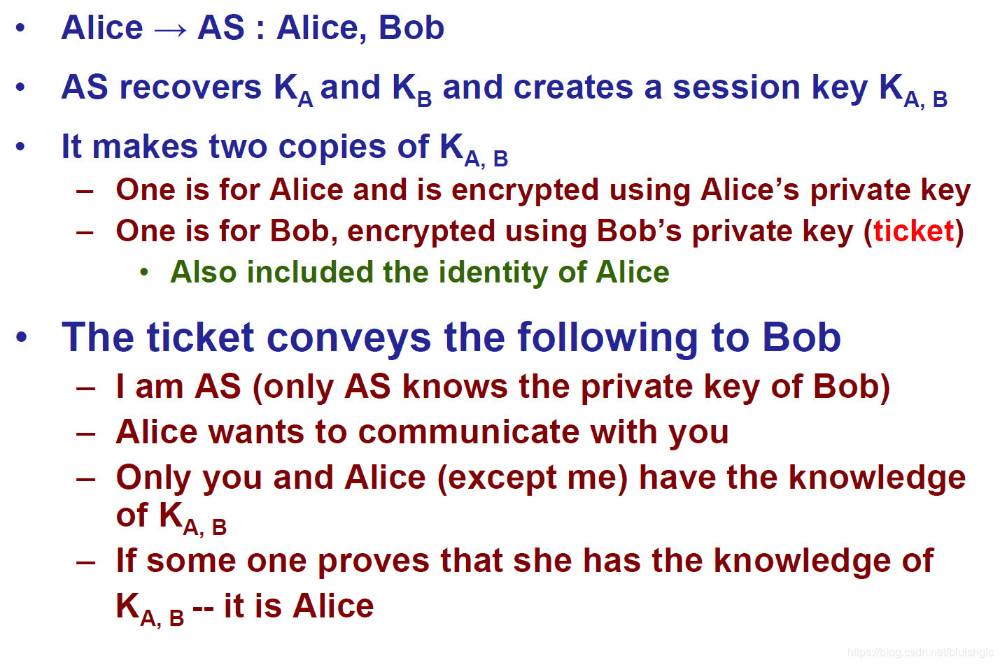
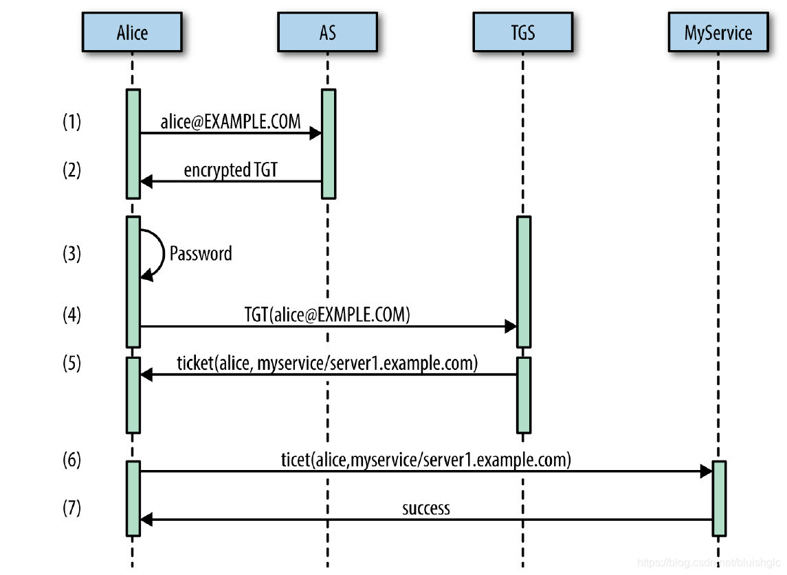

Kerberos 笔记
本文以《Hadooop Security》等资料为基础，罗列关于Kerberos的一些重要内容的笔记。
Kerberos的基本思想
总的来说，Kerberos要解决的是一个“Authentication”（身份认证）的问题，而“身份认证“就是在解决“如何证明某个人确确实实就是他或她所声称的那个人”的问题。对于如何进行Authentication，Kerberos使用的是这样的一种逻辑：如果一个秘密（secret）仅仅存在于A和B，那么有个人对B声称自己就是A，B通过让A提供这个秘密来证明这个人就是他或她所声称的A。
以Alice请求和Bob通信为例，通过Kerberos完成身份认证的过程如下：

其中Alice我们可以认为是一个用户，Bob可以认为某个Alice需要访问的服务。K(A,B)就是上面说的“秘密”， AS指的是Authentication Service，后面我们会解释。
没有Kerberos时，Hadoop是如何工作的？
Hadoop的身份认证是一种非常简单的认证方式，你告诉它你是谁，它就相信你是谁。例如我们在Linux上建立一个叫Bill的账号，当我们使用这个用户操作HDFS时，Hadoop就会认为当前操作的用户就是Bill，本质上是没有认证这个过程的。
Hadoop添加了Kerberos之后，实际的情况会变成：当你向Hadoop说你是Bill的时候，Hadoop会要要求你出示一下你的身份证件，只有你的证件显示你是Bill，Hadoop才相信你就是Bill。
Kerberos概述
首先， Kerberos是一种客户端-服务器架构。接下来是几个概念：
1. Principal
对于每一个访问的个体， Kerberos称之为"Principal", 这里要强调是：不管是一个用户还是一个服务，如果它们需要参与到Kerberos的认证体系里，他们都会是一个Principal。因此Principal会分为两种：User 类 型的Principal和Service类型的Principal。 其中User类型的Principal的名字叫UPN，Service类型的Principal的名字叫SPN。我们会在后面看到相关的例子。
2. Realm
一个realm是一个身份认证管理的域，所有的principal都会被分配到一个realm里。
3. KDC
当Principal和Realm被建立起来之后，接下来就是要搞清楚这些信息是如何被存储和控制的。负责这项工作的就是KDC（key
distribution center）， KDC由三个组件构成：Kerberos数据库，认证服务 （authentication service）以及票据授予服务（ticket-granting service）
3.1 Kerberos数据库
Kerberos数据库存储所有的rincipals和realm信息，principal在数据库中会有一个唯一命名(类似一个业务主键)，命名规范类似如下：
alice@EXAMPLE.COM
UPN会唯一标识一个用户。通常realme名都会大写。
接下来是一个UPN的一个变种：
bob/admin@EXAMPLE.COM
这个UPN标识了bob是EXAMPLE.COM这个real的管理员。
再接下来，
hdfs/node1.example.com@EXAMPLE.COM
这个是一个HDFS服务的principal，斜线后面的主机名代表了这个服务所运行的主机node1.exam
ple.com,
注：principal名称是大小写敏感的，一般用户或服务名称小写，realme名称全部大写。
3.2 认证服务 （authentication service)
AS的作用是发布票据授予票据：ticket granting ticket (TGT)给到一个客户端，TGT用于 请求访问其他服务。
3.3 票据授予服务（ticket-granting service）
票据授予服务用于验证TGT和授予服务票据（service tickets），服务票据允许一个通过身份认证的principal去使用某个服务。总之，KDC的AS和TGS是用来处理身份认证和服务访问控制的。
下表汇总了各类术语和名词：
一个简单的演示Kerberos工作流程的例子
在这个例子中， 我们引入如下principal
1 | EXAMPLE.COM //The Kerberos realm |
为了能让Alice使用myservice, 她需要出示一个有效的服务凭证给到myservice, 以下展示她如何一步步地做到：
-
首先，Alice需要获得一个TGT，为了实现这一目的，她向AS发起一个请求，来验证她作为principal “alice@EXAMPLE.COM“的身份（这一步Alice只会提供她请求的principal的名称）。
-
AS会返回一个TGT, 这个TGT是通过key (password)加密的。
-
在接收到加密凭证之后，Alice会被要求输入password以便进行TGT的解密。
-
成功解密之后，Alice会拿着这个TGT去TGS请求myservice/server1.example.com@EXAMPLE.COM这个服务的服务票据（service ticket）
-
TGS会验证这个TGT，能过后会发给Alice一个服务凭证，这个服务凭证会使用 myservice/server1.example.com@EXAMPLE.COM这个principal的key进行加密。
-
Alic向myservice出示了她获得的这个服务凭证，并且这个凭证被myservice/server1.example.com@EXAMPLE.COM成功解密并验证
-
myservice允许Alice使用这个服务，因为她成功地通过了验证。
上述过程可以总结为：
客户端用户发送自己的用户名到KDC服务器以向AS服务进行认证。KDC服务器会生成相应的TGT票据，打上时间戳，在本地数据库中查找该用户的密码，并用该密码对TGT进行加密，将结果发还给客户端用户。该操作仅在用户登录或者kinit申请的时候进行。 客户端收到该信息，并使用自己的密码进行解密之后，就能得到TGT票据了。这个TGT会在一段时间之后失效，也有一些程序( session manager)能在用户登陆期间进行自动更新。当客户端用户需要访问某服务(Kerberos术语中用"service principal"表示)的时候，该客户端就发送TGT到KDC服务器中的TGS服务。当该用户的TGT验证通过并且其有权访问所申请的服务时，TGS服务会生成一个该服务所对应的ticket和session key，并发还给客户端。客户端将服务请求与该ticket一并发送给相应的服务端即可

跨 realm 互信
对于大型企业和组织，存在多个realm是很常见的，企业和组织的用户需要跨realm访问相关的服务，这时候需要在两个realm之间建立信任，只有建立了信任才能相互访问对方的服务。信任是有方向性的，分单向和双向。那么realm之间的信任是如何建立的呢？这是通过一个特殊的principal： krbtgt/<TRUSTING_REALM>@<TRUSTED_REALM> 来实现的。需要强调的是，这个principal必须在两个realm都存在。例如：如果HR.EXAMPLE.COM的realm需要信任MARKETING.EXAMPLE.COM，则krbtgt/HR.EXAMPLE.COM@MARKETING.EXAMPLE.COM必须同时存在于HR.EXAMPLE.COM和MARKETING.EXAMPLE.COM中。
操作实例
回到Alice的故事，对于用户来说，刚才进行身份验证并获取服务访问授权的工作，实际上只有一个命令：
1 | [alice@server1 ~]$ kinit |
kinit用于获得或更新Kerberos票据授权票据（ticket-granting ticket），在不指定principal的情况下，kinit会使用当前OS的用户名和默认realm作为principal的名称，也就是在echo中出现的 alice@EXAMPLE.COM
如果需要以另一个指定的principal使用服务，则可以显式地指定：
1 | [alice@server1 ~]$ kinit alice/admin@EXAMPLE.COM |
kinit除了使用用户名或密码， 还可以使用一个文件，这个文件使用.keytab作为后缀，文件中存储着加密的密钥。使用keytab文件的好处是它是非交互的，这特别适用于服务类型的principal。一个keytab文件并不一定只能包含单一的principal，多个不同的principal的key可以存放在一个单一的keytab文件中。以下命令展示了kinit使用keytab文件进行身份认证：
1 | [alice@server1 ~]$ kinit -kt alice.keytab alice/admin@EXAMPLE.COM |
keytab文件认证还有另外一个特点：那就是不需要密码即可获得认证，所以keytab文件需要被妥善管理，避免任意传播。
MIT Kerberos还提供了另外一个有用的工具klist用来查看当前用户所持有的凭证，这些凭证是放在文件系统上的一个指定位置的，在linux上，这个位置是/tmp/krb5cc_ ，其中 是用户的ID
除此之外，我们还可以使用kdestroy来销毁用户的凭证，避免凭证外泄。
服务器端的配置
服务器端的配置都在kdc.conf文件中。 在RHEL和CentOS中，存放这个文件的路径是：/var/kerberos/krb5kdc/. 下面是一个配置样本：
1 | [kdcdefaults] |
在第一部分中，kdcdefaults的配置会被应用到所有的realm中，除非某些realm所以另行的指定。 kdc_ports 和 kdc_tcp_ports用于指定UDP和 TCP 端口。
第二部分中对每一个realm进行的单独配置。
-
acl_file： 用于指定admin server访问控制列表的本件
-
dict_file: 用于指定一个不允许字典中出现的单词的文件
-
supported_enctypes: 用于指定KDC支持的加密类型
-
max_renewable_life： 指定一个ticket可以被renew的最大时间
acl文件用于控制哪些用户可以访问kerberos管理数据库。kerberos的数据库是由两个不同但相互关联的组件构成：kadmin.local 和 kadmin。前者是一个允许KDC服务器的root用户来修改Kerberos数据库的工具，如其名称所暗示，这个工具只能在KDC服务器在本地上使用。如果管理员想从远程管理kerberos数据库，则只能使用kadmin组件。
kadmin是一个daemon进程， 以允许管理员远程登入管理kerberos数据库，至于哪些UPN被允许使用哪个服务，这都是由kadm5.acl文件来配置的：
1 | */admin@EXAMPLE.COM * |
这份配置的含义是：
第一条是允许EXAMPLE.COM下的任何admin角色的principal执行任何操作
第二条的含义是允许cloudera-scm@EXAMPLE对hdfs服务执行任何操作
第三条同理
Principal的增删查改
创建一个Principal
1 | kadmin: addprinc alice@EXAMPLE.COM |
查看一个Principal的详细信息
1 | kadmin: getprinc alice@EXAMPLE.COM |
删除一个Principal
1 | kadmin: delprinc alice@EXAMPLE.COM |
列出所有的Principal
1 | kadmin: listprincs |
客户端的配置
客户端的配置文件默认为 krb5.conf ，存在于/etc/文件夹下， 以下是一个示例：
1 | [logging] |
第一部分是logging配置, 略过。 然后是libdefaults部分：
-
default_realm: 默认realm，例如当我们使用kinit而不指定principal时使用的就是这里配置的默认realm
-
dns_lookup_realm：是否可以通过DNS查找使用什么样的realm
-
dns_lookup_kdc：是否可以通过DNS查找KDC
-
ticket_lifetime： 设定ticket的有效期
-
forwardable： 用于指定ticket是否可以被转发，转发的含义是：如果一个用户已经有了一个TGT，当他登入到另一个远程系统，KDC会为他自动重新创建一个TGT，而不需要让用户重新进行身份认证
然后是[realms]部分，这一部分会列出所有的realm，kdc和admin_server两个配置是在告诉客户端哪台服务器在运行KDC以及kadmin进程。这两项配置可以在服务器上追加端口，如果不指定，则使用默认端口，KDC是88，admin server是749.
最后一部分[domain_realm]是配置DNS名称和Kerberos Realm映射的。 .example.com = EXAMPLE.COM 是在说：所有在example.com域下的主机都会被映射到EXAMPLE.COM这个realm下，而 example.com = EXAMPLE.COM 是说example.com它自己也会映射到EXAMPLE.COM这个realm， 对于下面的dev配置同理。